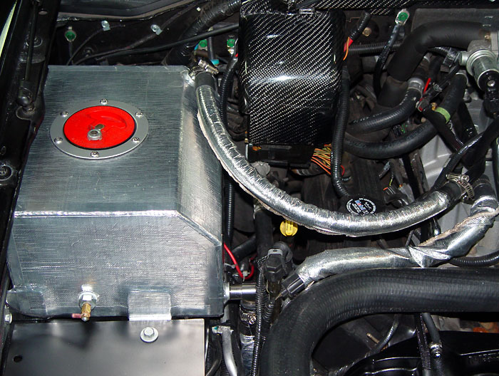
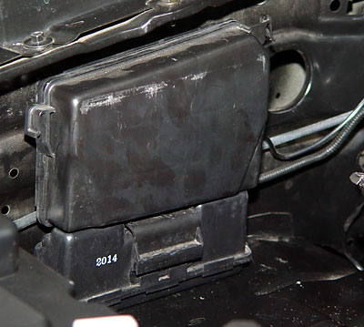
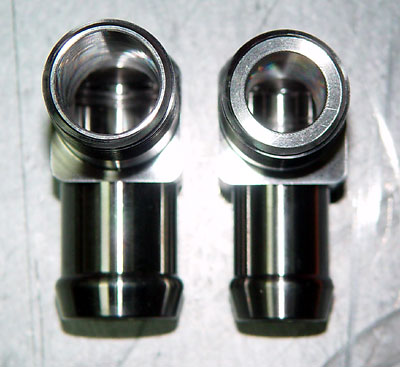
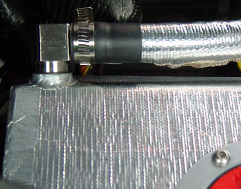
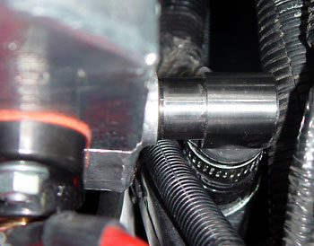
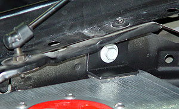

|
High-capacity Intercooler Reservoir |
|
The most logical place to
install a high-capacity intercooler reservoir is where the battery
sits.
 When your remove the battery, you will see these mystery boxes behind it. From Neil on F150 Online: "The small rectangular shaped black box behind your battery is actually a vacuum reservoir for storing vacuum to operate your climate controls when your truck is not running. I removed mine with no after effects. You just can't use the climate controls when the engines not running. Like who would want to anyway?" A response from 01LightninBolt: I took both mine out along with 4 FEET of vacuum hoses running all over the engine bay for the boost dump solenoid and just capped it off. It is so much cleaner now, and I took off all that loom crap off everything too with all that sticky tape. Will be relooming the visible lines soon.. Just remember to keep vacuum running to the line going into the firewall for the climate controls . . . it's behind, underneath the starter solenoid. A further response from Litemup: The top mystery box is a vacuum reservoir for your a/c system. The bottom one is for your EGR system. They store vacuum to keep your air that comes out of the dash when in the a/c mode or vent mode to remain operational when you have no vacuum. Otherwise the air comes out from the defroster vent or the floor like when the heater is on. The one for the EGR stores vacuum so that the EGR valve doesn't open or close when it's not supposed to. Your vacuum goes away when accelerating or going uphill. These store your vacuum for those times when it is needed. The REM reservoir comes with no instructions. As I found out through trial and error, installation goes like this: 1. Remove the windshield washer fluid reservoir ("WWFR"). 2. Remove the battery. 3. Remove the vacuum reservoirs behind the battery and cap off the lines. 4. Use a Sharpie and draw lines on the surrounding sheet metal running through the WWFR mounting holes so that you can sight the centers of the holes when the intercooler fluid reservoir ("ICFR") is set in place. 5. Set the ICFR in place. Move it front-and-back until the WWFR mounting holes are under the ICFR mounting ears and mark the centers. Drill the mounting holes. 6. Now is where it gets weird. If you want to keep using the WWFR, you will need some surgery. The WWFR mounting ears will have to mount over the ICFR mounting ears in on the horizontal ear, but under the vertical ear. This requires trimming in vertical ears on both the WWFR and the ICFR. 7. Drain the IC fluid, swap the lines, remove the stock ICFR, and refill the system.
|
|
The hose fittings welded on were suboptimal. The lower fitting was for a 5/8" hose, while the pump takes a 3/4" hose. In fact, the stock reservoir is 1" at the reservoir, tapering down to 3/4" at the hose. So clearly the pump wants little inlet restriction. The top hose fitting is the right size (5/8"), but the vertical hose routing is goofy. Jegs to the rescue. Found these uber-trick stainless fittings. They are both 1/2" NPT (the largest thread that would fit in the bungs on the REM reservoir), but note how the 3/4" fitting is bored out to 3/4" ID. Cool. |
|
To help with underhood heat rejection, I painted the REM ICFR with silver ceramic paint and covered it with Thermo-Tec self-adhesive material. I also covered the hoses in the engine compartment with Thermo-Tec Thermo-Wrap.   |
| To secure the reservoir, I covered the bottom with a layer of neoprene foam and fabricated a brace for the top from angle aluminum, with neoprene where it contacts the reservoir. |